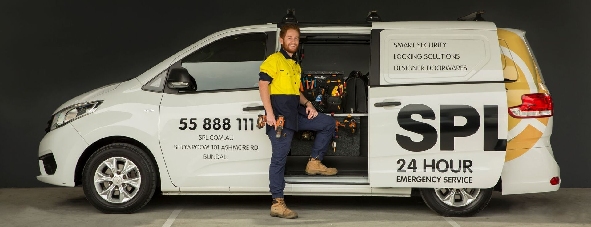
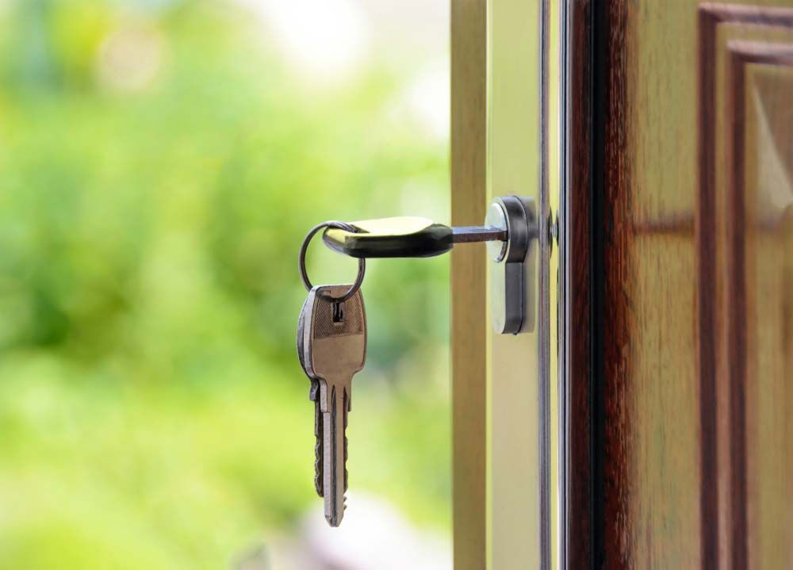
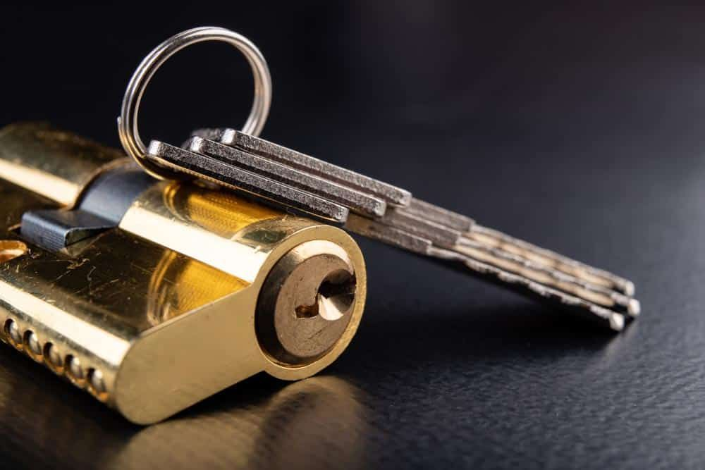
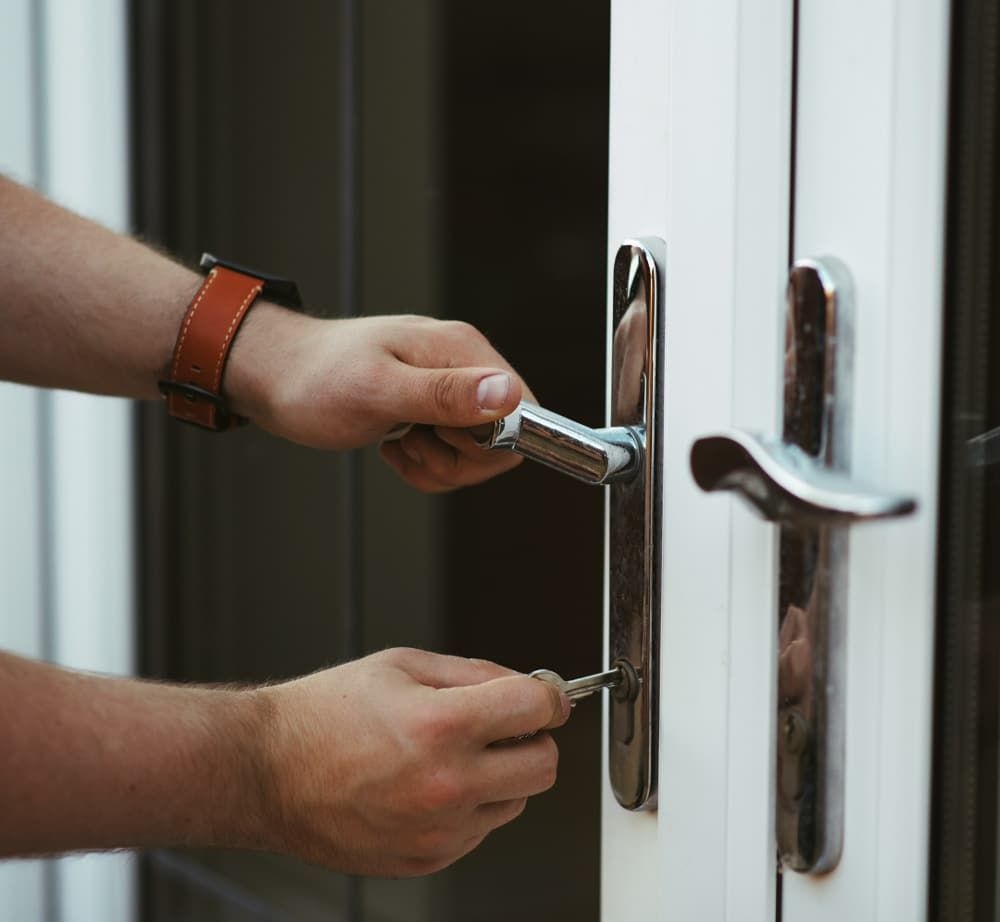
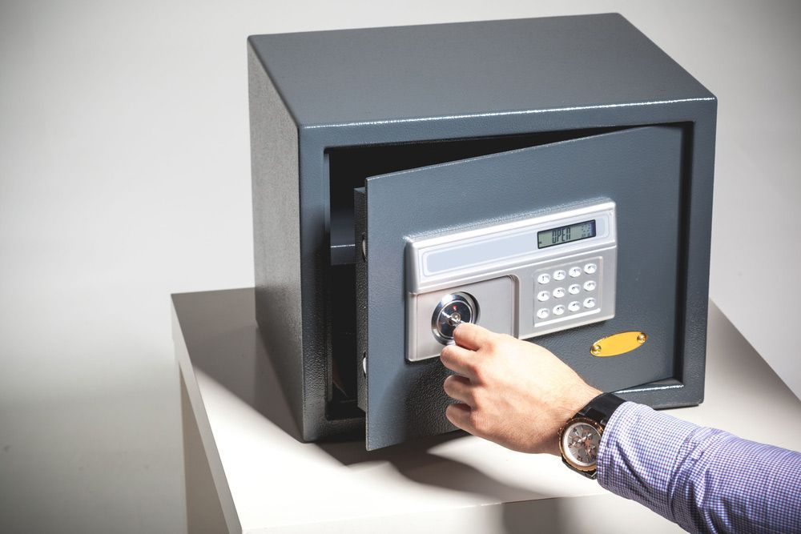

On this page
AT A GLANCE
Here at SPL Security Solutions, we provide our customers with professional mobile locksmith service 24 hours a day.

Here at SPL Security Solutions, we provide our customers with professional mobile locksmith service 24 hours a day. From emergency entry to replacement key cutting, we are the experts. Our fully equipped vans provide all locksmith services to residential or commercial buildings throughout Gold Coast & surrounding areas
24 Hour Mobile Locksmiths Gold Coast & Surrounds
At SPL Security Solutions we offer both home and business locksmith services across the Gold Coast. Our fully trained and experienced Master Locksmiths use all the latest technology and equipment to ensure that we find the solution to your problem in the minimum of time and fuss.
SPL Security Solutions' full 24/7 mobile locksmith service means we are only a phone call away, 24 hours a day. We pack our vans with all the tools and equipment we need to find your lock solution. So, if you have lost or broken keys or worse, are suffering from a break-in, we can provide you with everything to secure your property there and then.

City skyline

Reliable Locksmith Service
- We can help in case of break-ins, lock outs, stolen keys
- We are a bricks and mortar business based in Bundall
- In our shop we cut all types of keys and we sell general door & window security locks
- We supply, fit and upgrade locks to insurance specifications to domestic and commercial properties
- 24 hour rapid response to emergencies
- We replace and install door locks of all types
- We supply and fit security door, windows grilles and security bar doors
- We carry out lock and cylinder repairs and replacements to doors and windows
- Our work is insurance approved and fully guaranteed
Gold Coast Emergency Locksmith Services
SPL Security Solutions offer professional and efficient 24-hour emergency locksmith services at unbeatable locksmith prices. We realise that emergency locksmith situations can be frustrating, time-consuming and sometimes put you and your family, employees and assets at risk.
A fast, professional and effective response is what we offer in such unwanted situations. We provide 24/7 local locksmith service and our local emergency locksmith will be there ASAP for your own peace of mind, any time of the day. Servicing Gold Coast, Brisbane & Northern NSW.
An emergency locksmith can help you with:
- Lockouts – Gain access to a property or business
- Repairs and opening
- Open a locked vehicle when your locked out of your car, jammed ignitions (auto locksmiths)
- Opening a safe
- Key cutting, spare keys, broken keys
- Car key cutting, transponder keys
- Lock opening, changing the locks, lock repairs
- Burglary repairs and re-securing a property after a break-in


Why You Should Choose Us
- 24/7 emergency locksmith service
- Technicians across the entire Gold Coast, so when you’re hunting for a “locksmith near me”, no matter where you are we have you covered
- All popular brands of locks including Lockwood, Madinoz, Parisi, Pittella, Gainsborough, Nidus and Olivari Bellevue
- If you need locks that will be approved by your insurance company we have a large range of locks that conform to Australian Standards
- All technicians are fully qualified with experience to tackle any locksmith issue
Save this number in your phone!
07 5588 8111
We can send a fully qualified locksmith to your home or business 24/7. Our highly trained and professional locksmiths are on standby around the clock. We are only a phone call away so get in touch today.